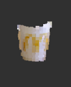

Aubo Robotic Pick-And-Place
Research Assistant
08 2020 - 04 2021
Developed a deep learning approach for pick and place tasks with an Aubo Robotic Arm. The project involved implementing object detection and pose detection using OpenCV and YOLO.
- Python
- ROS
- Pose Estimation
- Computer Vision
The Completed Project


When the project was completed the robot arm equiped with a point cloud and RGB camera is able to automatically pick objects that a user selects
Object Detection
Using YOLO v4 object detection algorithm I was able to train a model to recognize and draw bounding boxes on items found in the Lab
Pose Estimation
I first need to segment out the object in question to perform pose estimation

Once the object is segmented out we cna perform pose estimation to get a decent transformation that the robotic arm can try to move to.